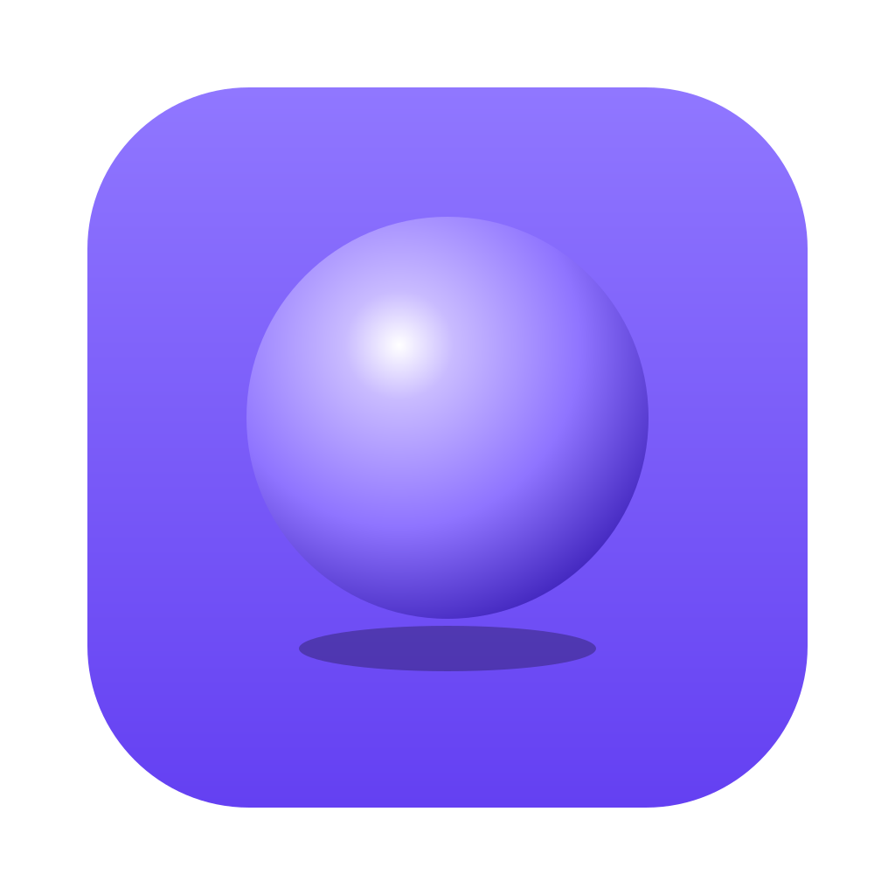
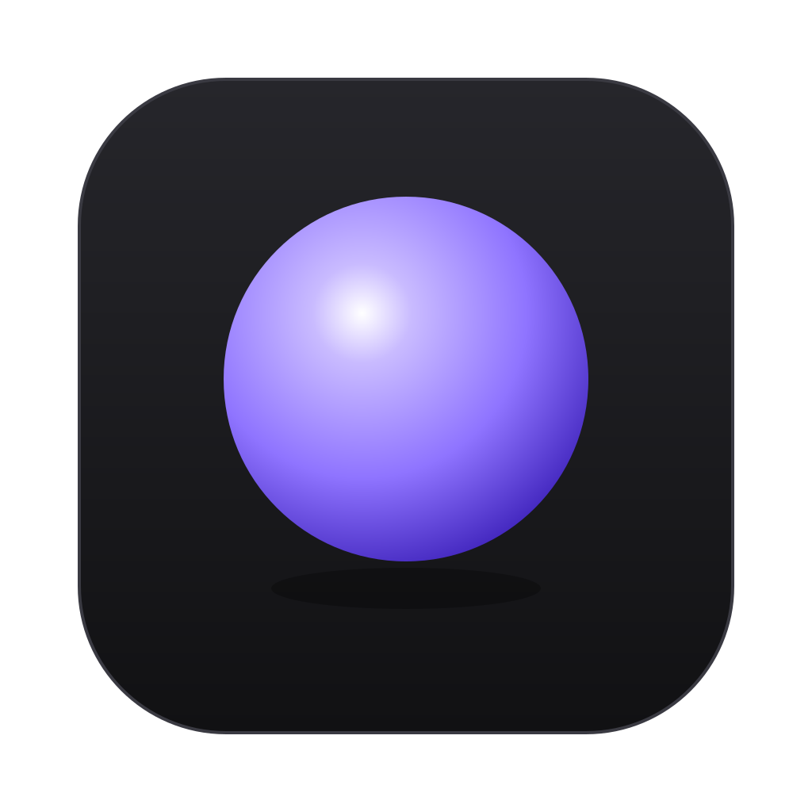

Two rounded chevrons: Hyper as in fast. Speed and lightness are what set HyperMe apart.
The HyperMe dot streaks in and leaves a check behind it: you ask, it lands done.
The dot rises over the pill like a sun over the horizon: your day, started.
The dot as a living presence, a glossy violet orb resting on its shadow.

